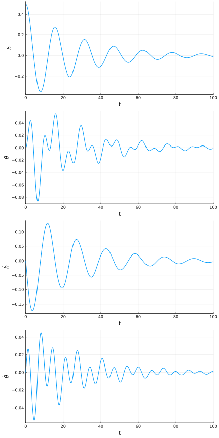
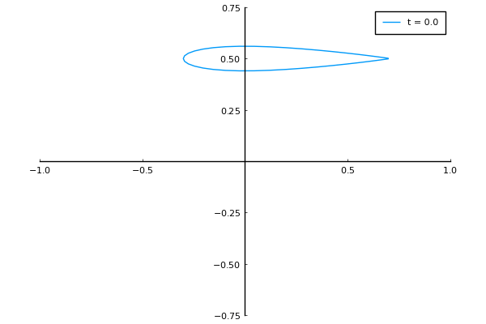

Time Domain Simulation of a Typical Section
In this example, we simulate the response of two degree of freedom typical section model. We use the same parameters as in the previous example

This example is also available as a Jupyter notebook: section-simulation.ipynb.
using Aeroelasticity, DifferentialEquations, LinearAlgebra
# define non-dimensional parameters
V = range(1e-6, 3.1, length=1000) # = U/(b*ωθ) (reduced velocity)
a = -1/5 # reference point normalized location
e = -1/10 # center of mass normalized location
μ = 20 # = m/(ρ*pi*b^2) (mass ratio)
r2 = 6/25 # = Iθ/(m*b^2) (radius of gyration about P)
σ = 2/5 # = ωh/ωθ (natural frequency ratio)
xθ = e - a # distance from center of mass to reference point
a0 = 2*pi # lift curve slope
α0 = 0 # zero lift angle
cd0 = 0 # drag coefficient
cm0 = 0 # moment coefficient
# choose dimensional parameters
b = 1 # semichord
ρ = 1 # air density
ωθ = 1 # pitch natural frequency
c = 343 # air speed of sound
# calculate dimensionalized parameters
U = V*b*ωθ # freestrean velocity
m = μ*ρ*pi*b^2 # mass
Sθ = m*xθ*b # mass imbalance
Iθ = r2*m*b^2 # inertia
ωh = σ*ωθ # plunge natural frequency
kh = m*ωh^2 # plunge spring constant
kθ = Iθ*ωθ^2 # pitch spring constant
# reduced velocity
V = 1.0 # = U/(b*ωθ)
# dimensionalized velocity
U = V*b*ωθ
# define coupled model
model = assemble_model(;
aerodynamic_model = Peters{6}(),
structural_model = Section())
# define parameter vector
p = assemble_parameters(model;
aerodynamic_parameters = (; a = a, b = b, a0 = a0, alpha0 = α0, cd0 = cd0, cm0 = cm0),
structural_parameters = (; kh = kh, ktheta = kθ, m = m, Stheta = Sθ, Itheta = Iθ),
additional_parameters = (; U = U, rho = ρ, c = c))
# construct ODE function
f = ODEFunction(model)
# initial states
x0 = assemble_states(model;
aerodynamic_states = (;lambda=zeros(6)),
structural_states = (;h=0.5, theta=0, hdot=0, thetadot=0))
# simulate for 100 seconds
tspan = (0.0, 100.0)
# construct ODE problem
prob = ODEProblem(f, x0, tspan, p)
# solve ODE
sol = solve(prob)We can then plot the solution using DifferentialEquations' built-in interface with the Plots package.
using Plots
pyplot()
plot(sol,
vars = [7,8,9,10],
xlabel = "t",
ylabel = permutedims([
"\$h\$",
"\$\\theta\$",
"\$\\dot{h}\$",
"\$\\dot{\\theta}\$",
]),
label = "",
layout = (4, 1),
size = (600,1200)
)
For aeroelastic models based on a typical section, we can also easily visualize the section's behavior.
# animation parameters
a = -1/5
b = 0.5
# create animation
anim = @animate for t in range(tspan[1], tspan[2], length=200)
h, θ = sol(t, idxs=7:8)
xplot, yplot = section_coordinates(h, θ; a, b)
plot(xplot, yplot;
framestyle = :origin,
grid = :false,
xlims = (-1.0, 1.0),
ylims = (-0.75, 0.75),
aspect_ratio = 1.0,
label = "t = $(round(t, digits=1))")
end
gif(anim, "../assets/section-simulation.gif")┌ Info: Saved animation to
└ fn = "/home/runner/work/Aeroelasticity.jl/Aeroelasticity.jl/docs/build/assets/section-simulation.gif"
This page was generated using Literate.jl.